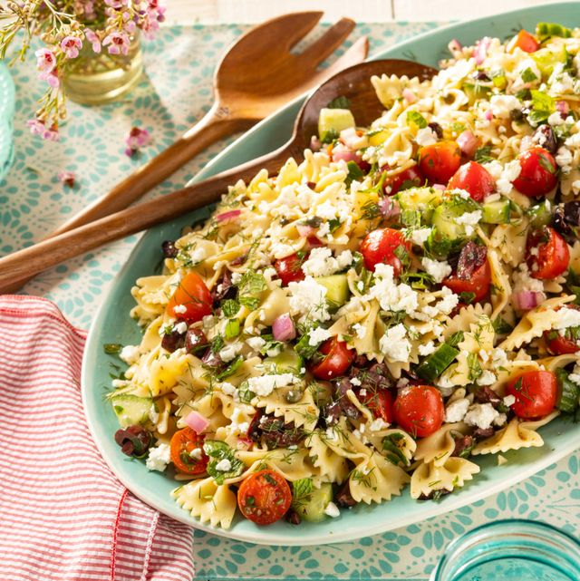

Greek Pasta Salad

Description
For a fresh idea with pasta, try Greek salad
Ingredients
-
300g fusilli pasta spirals – or you can use farfalle (butterflies) or
penne (quill tubes)
- 225g bag prepared fresh baby spinach
- 250g punnet cherry tomatoes , halved
- 100g black olive (we bought kalamata from the deli counter)
- 200g feta cheese , broken into rough chunks
- 3 tbsp olive oil
Steps
-
Tip the fusilli into a large pan of boiling salted water and boil for 10
minutes. Throw in the spinach, stir well and boil for another 2 minutes.
Drain into a colander or sieve and leave to drip-dry.
-
Tip the tomatoes, olives and feta into a big bowl, grind lots of black
pepper over and then drizzle with the olive oil.
-
Toss in the drained pasta and spinach, and let everyone help themselves.